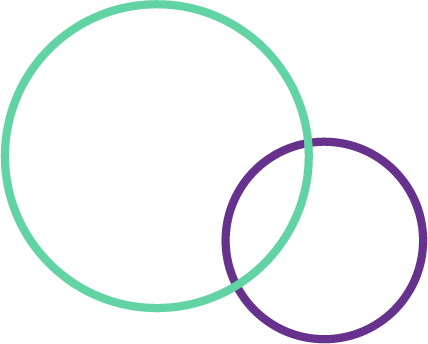
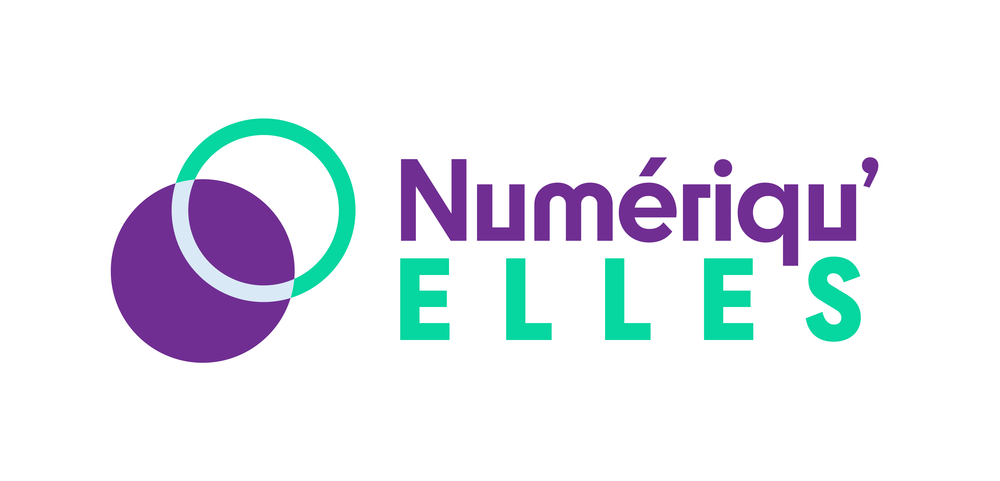

- 
- 

Rendez vous le 11 Décembre 2020
Si vous souhaitez prolonger votre expérience du numérique, vous pouvez trouver un stage proposé par les entreprises partenaires (en fonction de l’évolution de la crise sanitaire) en utilisant les plateformes de stage dédiées
Merci de veiller à ce que toutes les contraintes techniques soient prises en compte avant le jour J afin que nous puissions tous profiter de ce forum dans les meilleures conditions.
Nous comptons sur les encadrants pour jouer le rôle de modérateur afin d’animer et réguler les échanges en collaboration avec nos partenaires sur les ateliers.
Les jeunes filles pourront devenir « Ambassadrices du numérique » en participant à ce nouveau concours.
Enfin, si certaines d’entre elles souhaitent prolonger leur expérience du numérique, elles pourront trouver un stage proposé par nos entreprises partenaires (en fonction de l’évolution de la crise sanitaire)
8H30-9H00
Début des connexions (tests de connexion, audio et vidéo)
9H00-9H30
Séance plénière afin d’introduire et de présenter l’organisation du forum
9H30-12H00
4 à 5 ateliers pour découvrir le numérique en respectant votre planning
12H00-12H15
Mot de la fin
8H30-9H00
Début des connexions (tests de connexion, audio et vidéo)
9H00-9H30
Séance plénière afin d’introduire et de présenter l’organisation du forum
9H30-12H00
4 à 5 ateliers pour découvrir le numérique en respectant votre planning
12H00-12H15
Mot de la fin
Si vous rencontrez des difficultés à vous connecter au salon virtuel, consultez le PDF
Par mesure de sécurité, si la visioconférence VIA n’est pas fonctionnelle, les partenaires ont prévu un lien Teams de secours pour proposer leur atelier. Merci de vérifier que l’accès à Teams est possible sur le réseau de votre établissement.
Questionnaire de satisfaction
Envoyez le questionnaire à l'adresse suivant :
mdilmi@corif.fr
Remplir le formulaire en ligne